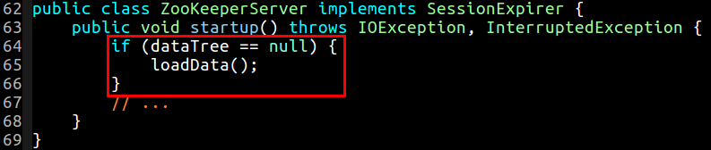
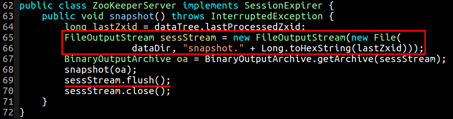
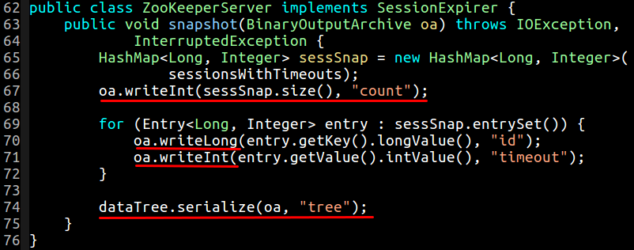
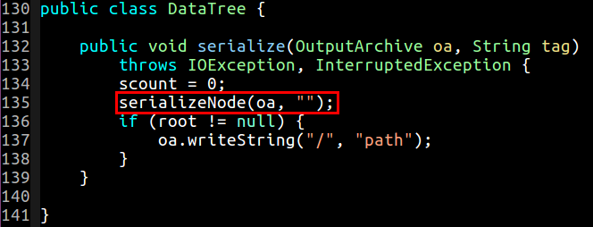
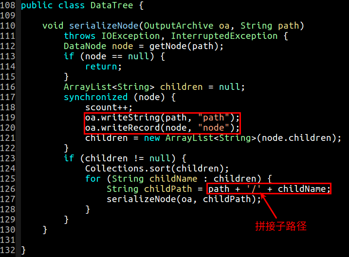
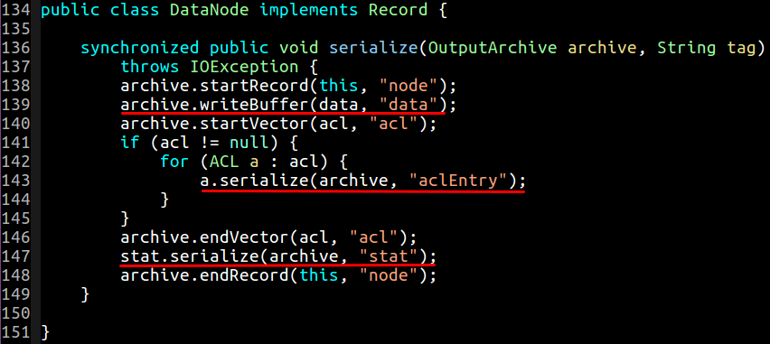
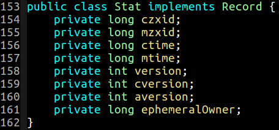

ZooKeeper源码分析(四) - dataTree
创建 snapshot
我们在运行 ZooKeeperServer 的时候，需要至少传入两个参数:
|
|
一个是服务器监听的端口号，另外一个是 ZooKeeperServer 用来存放数据的文件夹 (注意，此文件夹一定要实现创建好，ZooKeeperServer 是不会默认为你创建的)。接下来我们就会对这个文件夹内创建的文件做详细分析。ZooKeeperServer 的 main 方法实例化了 ZooKeeperServer 服务，并调用了自身的 startup 方法来启动服务，在 startup 方法其会尝试进行加载数据:

在首次运行 ZooKeeperServer 的时候，这个文件夹是空的，所以位于 loadData() 中的一些代码并不会执行，简而言之，loadData() 首次运行主要是创建了一个文件: snapshot.0 ，其中 0 代表的是事务 ID，由于首次事务 ID 从 0 开始，所以第一个运行 ZooKeeperServer 就会创建这个文件。snapshot 方法接着会将这个文件写到文件夹中去:

序列化 dataTree 到 snapshot 中
在关闭 snapshot 的输出流之前，会序列化一些数据到这个文件中去，首先在 snapshot(BinaryOutputArchive oa) 这个方法中会把一些会话超时信息序列化到文件中去，然后接着会调用 dataTree.serialize 方法来序列化整个 dataTree 的信息到这个文件中去:

serialize 方法，会从空字符串的路径开始序列化整个数据树，并采用深度优先算法依次调用 serializeNode 方法来序列化每一个节点:

serializeNode 会依次拼接子路径，然后将路径字符串和节点信息一并写到文件中去:

在 DataNode 中，会看到每个节点，主要是把 data、acl、stat 这三个信息序列化到文件中去了:

| 字段 | 描述 |
|---|---|
data |
每个节点存储的二进制字节数据 |
acl |
用于对节点的访问控制 |
stat |
每个节点的状态信息 |
Stat 结构中存储并将会序列化的信息如下:

| 字段 | 描述 |
|---|---|
czxid |
创建这个节点的事务 ID |
mzxid |
上一次修改这个节点的事务 ID |
ctime |
创建的时间戳 |
mtime |
修改的时间戳 |
version |
这个节点中的数据变化的次数 |
cversion |
这个节点的孩子中的数据变化的次数 |
aversion |
这个节点中 ACL 变化的次数 |
ephemeralOwner |
临时节点 (如果是) 的会话 ID 的拥有者，如果不是，则默认为 0 |